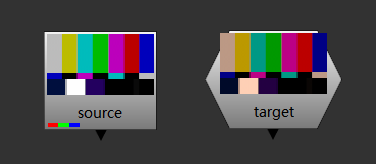
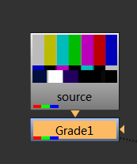
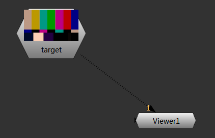
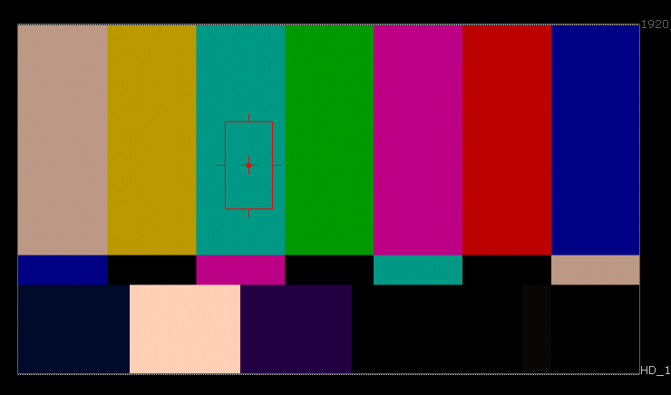
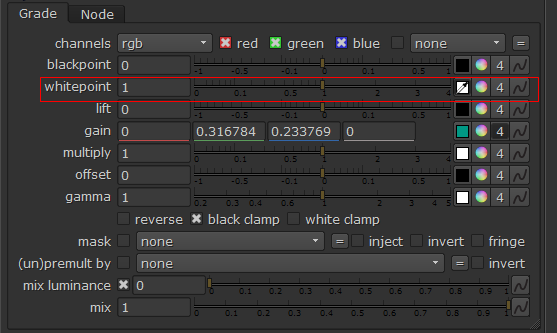
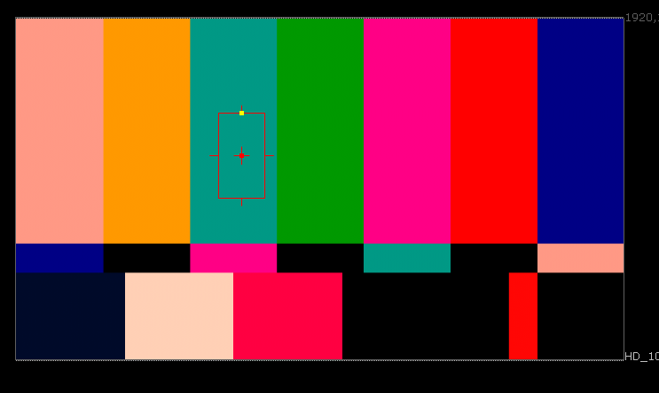
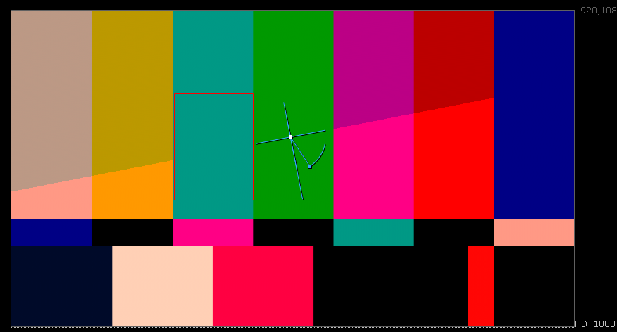

Grade校色¶
本节介绍利用 Grade 节点快速从匹配色调的方法
- 
存在源素材和目标色调参考
- 
在源素材上创建一个
Grade节点 
点击
gain右侧色块开始取目标色- 
将查看器连接至目标色调参考
- 
在查看器中按住
Ctrl+Shift在要匹配的区域进行框选取色 - 
点击
whitepoint右侧色块开始取素材色 - 
在查看器中按住
Ctrl+Shift+Alt在要匹配的区域进行框选取色 - 
效果, 如果要匹配多个区域请使用mask 或者
ColorLookup,VectorField节点
注解
nuke取色操作:
Ctrl : 单个点取色
Ctrl+Shift : 区域取色
以上两个操作时附加 Alt : 取色时在当前节点前取色(不受当前节点调色影响)